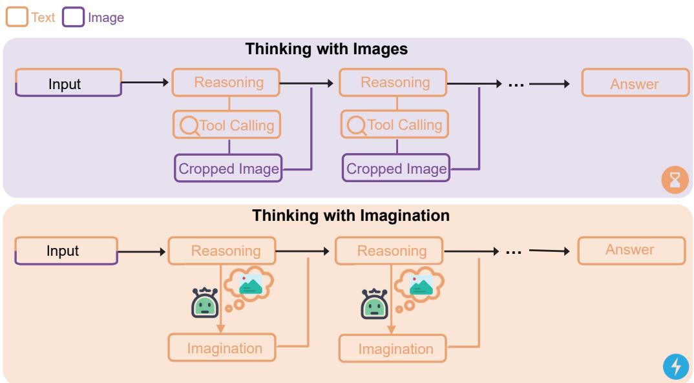

先说结论。适合作为“视觉证据如何从显式局部视图蒸馏为内部 latent 操作”的扫读材料。 把 Thinking with Images 的外部工具调用行为压缩进模型内部 reasoning trajectory。
Figureure 2 · : A concrete training instance of Imagine-OPDFigure 2: A concrete training instance of Imagine-OPD. Given an original image and a question, the student model generates its own imagination trace. A teacher then evaluates the same trajectory with privileged cropped evidence views and answer, providing on-policy supervision through a token-level KL objective.这张图来自论文 PDF 的结构化抽取。当前用于辅助理解 Thinking Without Images 的方法或实验，请结合正文精读段落一起看。

Figureure 1 · : From “Thinking with Images” to “Thinking with Imagination”Figure 1: From “Thinking with Images” to “Thinking with Imagination”. “Thinking with Images” interleaves text reasoning with explicit tool calls and cropped images, improving access to local evidence but incurring repeated tool interaction and visual encoding. Thinking with Imagination replaces these intermediate images with an internal imagination process that can carry forward the same fine-grained visual evidence without actually invoking tools.这张图来自论文 PDF 的结构化抽取。当前用于辅助理解 Thinking Without Images 的方法或实验，请结合正文精读段落一起看。